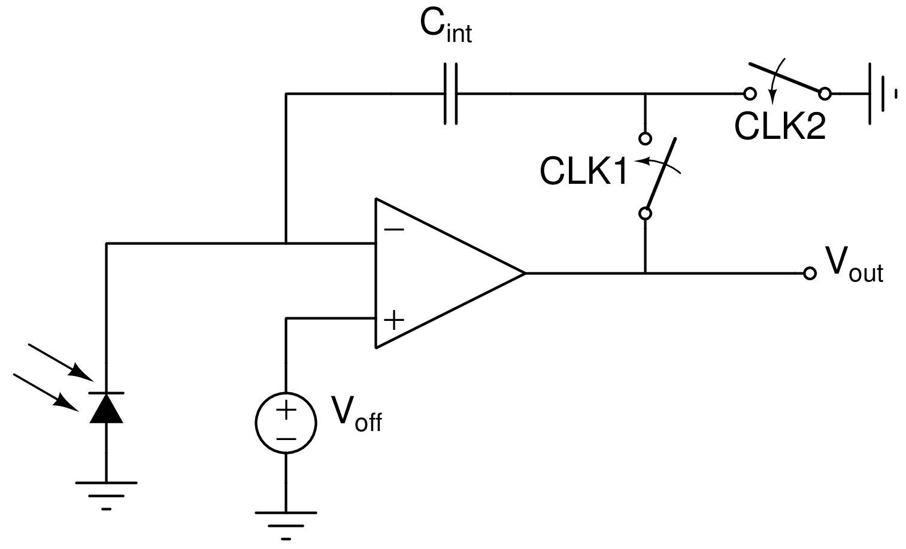
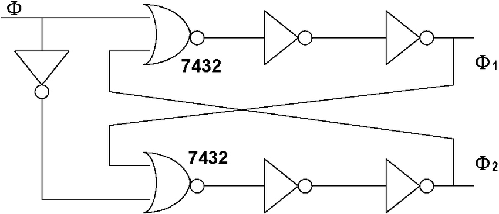
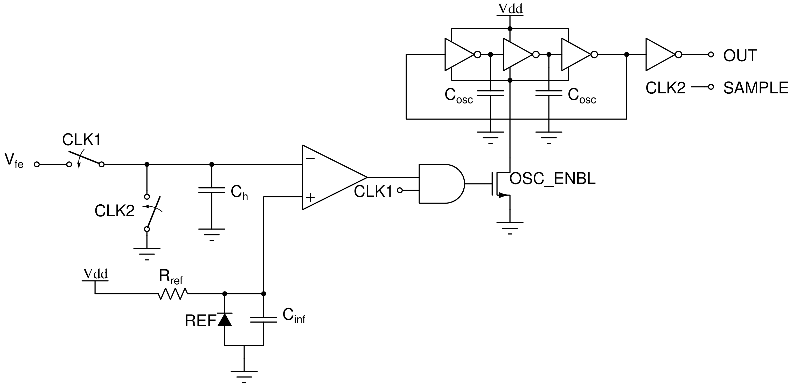
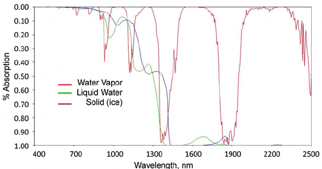
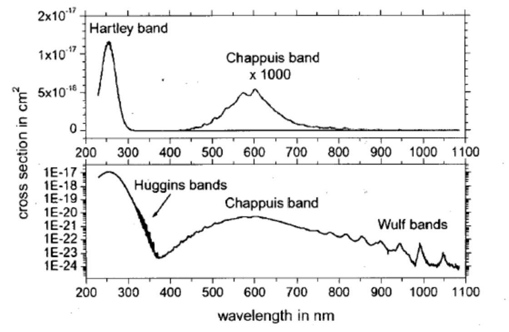

Notes on LED Photometry
Note: much of the information on this page is taken from the book Atmospheric Monitoring with Arduino.
Photocurrent measurement with a basic time-to-digital converter
LED photocurrent for photometry applications can be measured with a rudimentary time-to-digital converter (TDC). The schematic for the front-end of such a circuit is shown below.
Offset cancelling charge-sensitive detector |
|---|
 |
| When CLK2 is high, the charge on the cap is reset to \(−C_{int}V_{off}\). When CLK1 is high, this initial charge is canceled out and the output voltage becomes \(V_{out}=\frac{I_{photo}}{C_{int}}t\). |
The parasitic capacitance at the op-amp inverting input has a negligible effect, and any random offset from the op-amp is canceled out. Switches can be implemented with the CD4016B IC, and must be driven using a non-overlapping clock generator. The schematic for one such generator is displayed.
Non-overlapping clock generator |
|---|
 |
| This clock generator can be implemented with a hex inverter and 2 NOR gates. |
The analog output of this front-end can be fed into a back-end circuit that generates edges for counting by a microcontroller like the ATTINY85. The schematic is displayed below.
TDC Back-end |
|---|
 |
| The output voltage from the analog front end is fed into the inverting input of the comparator and used to enable a ring oscillator whose edges can be counted. The capacitor \(C_h\) is simply present to hold the inverting input voltage at ground when CLK2 and CLK1 are both low, and the REF is simply a voltage reference IC. The rising edge of CLK2 serves as a valid signal for the edge counter. |
Photometer calibration procedure
Since photometer sensors are meant to be pointed directly at the Sun during measurements, it may help to build aligning tools into the photometer casing. Otherwise, use noon measurements when the Sun is highest. Measurement times must be recorded.
The specific position of the Sun at noon changes as the Earth orbits the Sun. Because the sunlight is passing through a different amount of air mass at different points in the year, photometric measurements are significantly impacted and thus must be calibrated to atmospheric optical thickness (AOT).
Air mass is simply defined as \(m=1/sin(\theta)\) where \(\theta\) is the angle of the sun above the horizon. This quantity can be calculated from location and time, or directly measured with a clinometer. The change in air mass over the course of the year can be de-embedded by calculating the AOT. AOT gives the air clarity for any given air mass (the true reading of the photometer) and can be found with Langley extrapolation.
The steps for AOT calculation are as follows.
- Wait for a very clear day (constant humidity, no cloud cover, no atmospheric haze). Alternatively, wait for an overcast day with uniform cloud cover.
- Take measurements every half hour for half of the daylight hours (dawn to noon or noon to sunset).
- Measure the sun’s angle above the horizon at each measurement.
- Plot the log of the LED data on the y-axis against the air mass on the x-axis.
- Extrapolate linearly to find the y-intercept where the airmass is zero, the extraterrestrial constant (EC).
- The EC serves as a calibration constant specific to the photometer.
- Calculate AOT using the EC: \[AOT=\frac{1}{m}\frac{\log(EC)}{\log(LEDdata)}\]
Applications of photometry
Photosynthetically active radiation (PAR)
PAR refers to the blue and red light available for photosynthesis by plants. Summing the readings from a blue and red LED gives the PAR.
Atmospheric haze
Atmospheric haze is produced by aerosols which are more effective at scattering higher frequencies of light. The difference between the photocurrents of a red and green LED thus gives the level of haze at time of measurement.
Water vapor
Absorption spectra for different phases of water |
|---|
 |
| Ustin, Susan & Riaño, David & Hunt, E.. (2012). Estimating canopy water content from spectroscopy. Israel Journal of Plant Sciences. 60. 10.1560/IJPS.60.1-2.9. |
Water vapor has an absorption band around 940 nm. Comparing the output of a 940 nm LED against a 880 nm LED gives the amount of water vapor in the atmosphere. Because of the high dependence of water vapor on local weather (clouds, raining, snowing), better results can be obtained for measurements of upper atmospheric water vapor (above the weather) on clear days.
Ozone levels
Ozone absorption spectrum |
|---|
 |
| K Bogumil, J Orphal, J.P Burrows, J.M Flaud, Vibrational progressions in the visible and near-ultraviolet absorption spectrum of ozone, Chemical Physics Letters, Volume 349, Issues 3–4, 2001, Pages 241-248, ISSN 0009-2614, https://doi.org/10.1016/S0009-2614(01)01191-5. |
Taking the ratio of the readings from a 589 nm yellow LED and a 660 nm red LED (one with a response near the Chappuis band, and one with a peak freq. above it) gives ambient ozone levels.
Twilight haze
The “twilight intensity” measured at any given time by the photometer correlates with the “height” of Earth’s shadow. For a measurement at sunset, the photometer measures the reduction in light as the sun sinks below the horizon. The reverse is true for a measurement conducted at sunrise.
The height of Earth’s shadow can be calculated from the geographical location and elevation at any given time. Plotting this on the y-axis against the intensity measured by the photometer gives an idea of the heights at which there are significant concentrations of aerosols with dips in the measured intensity. Taking the derivative of the intensity before plotting serves to emphasize seemingly insignificant changes.
This measurement requires a 660 nm or 880 nm LED and a photometer with a wide dynamic range. The procedure is as follows:
- 10 minutes before sunset or 45 minutes before sunrise on a clear day, lay the photometer facing straight up on a level surface outdoors away from light sources.
- Record data at 1-second intervals.